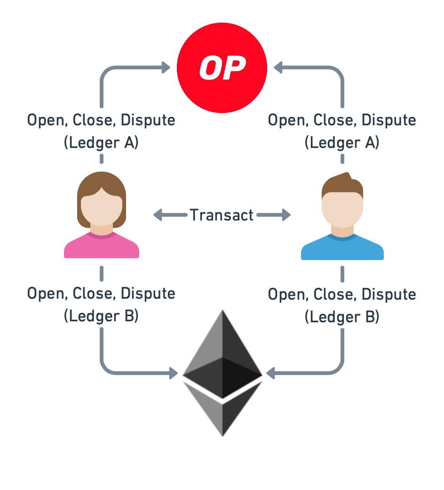

Multi-ledger channels
Multi-ledger channels are channels whose assets can reside on different networks. Here, we focus on the following restricted setting:
Payment channels only (i.e., no forced-execution style app channels).
The ledgers are of the same type (e.g., two EVM-compatible blockchains).
Overview
The idea behind multi-ledger channels is that assets are uniquely identifiable across targeted ledgers. The Perun contract must be deployed on all of them. Clients dispatch on-chain calls on all ledgers identified by the channel assets. They must ensure that the state of the contracts on different ledgers is kept in-sync.
If an honest client detects that contracts on different ledgers are out-of-sync, then it must send the corresponding transactions to make the state consistent again. For example, if a client detects that a channel is registered only on Ledger A but not on Ledger B, while assets from Ledger A and Ledger B are concerned, then the client will also register the same channel state on Ledger B.
{kind=link}
Asset definition
We require that an asset is uniquable identifiable across all targeted ledgers. A multi-ledger asset generally consists of the following components:
Ledger identifier. This value identifies the ledger of the asset.
Asset address. This value uniquely identifies the asset within the namespace of the given ledger.
Contract deployment
The Perun smart contract must be deployed on all target ledgers.
Funding
For funding a multi-ledger channel, the funding component needs to be capable of communicating with all supported ledgers.
Fund. Looking at the Ledger identifier of an asset, the funding component identifies to which ledger the funding transaction must be sent.
Check balance. Channel participants must check the funding on all corresponding ledgers. The funding is complete if the accumulated funding across all ledgers matched the targeted funding balance defined at channel opening.
Updating
The off-chain update protocol is the same as for single-ledger channels.
Settling
For settling a channel, the final state is registered on all targeted ledgers. The contracts identify which assets reside on the same ledger and only payout the corresponding assets. When the channel is settled on all targeted ledgers, all funds have been paid out.
Disputing
The watcher identifies when ledgers go out-of-sync. It then ensures the consistency of the different ledger states by performing the corresponding on-chain transactions.
For example, if the watcher notices a dispute registration on Ledger A, but not on Ledger B, it registers the the dispute manually on Ledger B.